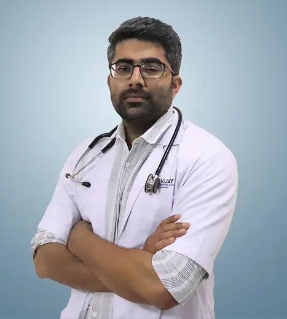

Precision Care.
Proven Expertise.
Elevating renal health through advanced diagnostics, compassionate management, and world-class transplant care.

A Foundation of Excellence
DM Nephrology
Trained at the prestigious PGIMER Chandigarh, specializing in complex renal disorders and cutting-edge transplant protocols.
ESE Nephrology (UK)
Internationally recognized certification, ensuring alignment with global standards of kidney health and patient safety.
10+ Years
Dedicated clinical experience across leading institutions.
5000+
Patients treated with precision and empathy.
A Legacy of Medical Integrity
Dr. Vignesh Subramani is a Consultant Nephrologist dedicated to providing uncompromising care. His journey began at Madras Medical College, where he completed his MBBS and MD, followed by a DM in Nephrology from PGIMER Chandigarh.
His approach combines deep clinical expertise with a subtle, patient-first philosophy. He believes that every renal journey is unique, requiring a bespoke management plan that balances technical precision with human understanding.
98%
Patient Satisfaction
Top 1%
Academic Excellence
24/7
Critical Support
Comprehensive Renal Solutions
Renal Transplantation
Complete pre-transplant workup and post-operative management using modern immunosuppressive protocols.
- Donor Evaluation
- ABO Incompatible Protocols
- Post-Transplant Wellness
Advanced Dialysis
High-flux hemodialysis and peritoneal dialysis options tailored to lifestyle and medical requirements.
- AV Fistula Planning
- Permcath Insertion
- Home Dialysis Guidance
Chronic Kidney Disease
Proactive management of CKD to delay progression and preserve quality of life.
- Diabetic Nephropathy
- Hypertension Management
- Nutritional Counseling
Frequently Asked Questions
What does a nephrologist do?
When should I see a nephrologist?
Where does Dr. Vignesh Subramani consult?
Can chronic kidney disease be reversed?
What are the early warning signs of kidney disease?
Do I need a referral to book an appointment?
Begin Your Recovery
Dr. Vignesh Subramani consults at Vijay Super Speciality Hospital & Cancer Centre, Dharmapuri. For appointments, urgent inquiries or second opinions, reach out below.
Appointments
Hospital
Vijay Super Speciality Hospital & Cancer Centre,
Konanginaickanahalli, Baisuhalli, Dharmapuri – 635205
24×7 Emergency & Ambulance
Medical Registration
Reg. No. 124803 — Tamil Nadu Medical Council Verify ↗